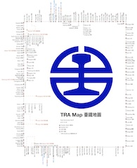

Taiwan TRA Railway Map
Peter Burkimsher 2016-10-28
peterburk@gmail.com

Download Map 下載地圖
Update - there is a better map!
On 2017-03-22, Kuururi Ahojanen from Himawari Design in Japan made a new map. It's much better. Please use his.
http://www.47rail.jp |
(PDF)
Timetable
I'm also working on a timetable app. It's hardly finished, but here's a link anyway.
http://peterburk.github.io/tra/timetable.html
What is the TRA map?
A subway-style "schematic" map of the railway network in Taiwan.
The distance between each station is proportional to the maximum time between the stations.
Express train stops, transfer stations, HSR and MRT connections are all shown.
HSR shuttle bus routes are also shown when those connect with TRA stations.
Why did you make it?
The existing map on the TRA website sucks. Only one region is shown at a time, and it is not bilingual.
I tried to go to Inland Rock music festival in Nantou. I stayed with friends in Taichung, and planned
which trains to take from there. But they dropped me in Fengyuan, and I missed the train I wanted.
I asked someone on the train: "Does this train go to Ershui?". She said yes. I didn't realise the mistake
until I got to Taichung Port. I missed the concert and the charter bus back to Kaohsiung. I also had to pay
for a new bus ticket to get home. The total cost of the mistake was over 1600 NTD. I was not happy.
How did you make it?
I wrote a new program called TurtleSheet to draw graphics using data from a spreadsheet.
The drawing process can be controlled using JavaScript, which is very powerful.
I imported the data from this file. I modified the data heavily during the process to add corners, colours and branch lines.
I copy-pasted this data into the Import Area, and clicked the Import button.
Then I wrote a simple JavaScript program to go through the data and make labels and circles.
Finally, I did a print-to-PDF, cropped the picture, and saved it as a JPG.
Why not just use Photoshop?
At first, I did. I made a bilingual geographic map. But the stations don't line up.
Why do some lines turn and turn back?
The length of the line is proportional to the time the bus takes. If there's no space, the line turns corners.
This is particularly a problem around Liujia.
What are the license terms?
The map is public domain, and you can use it wherever you want. I hope it helps somebody!